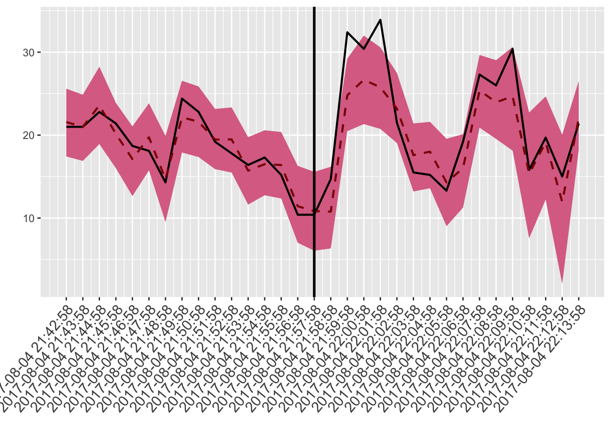
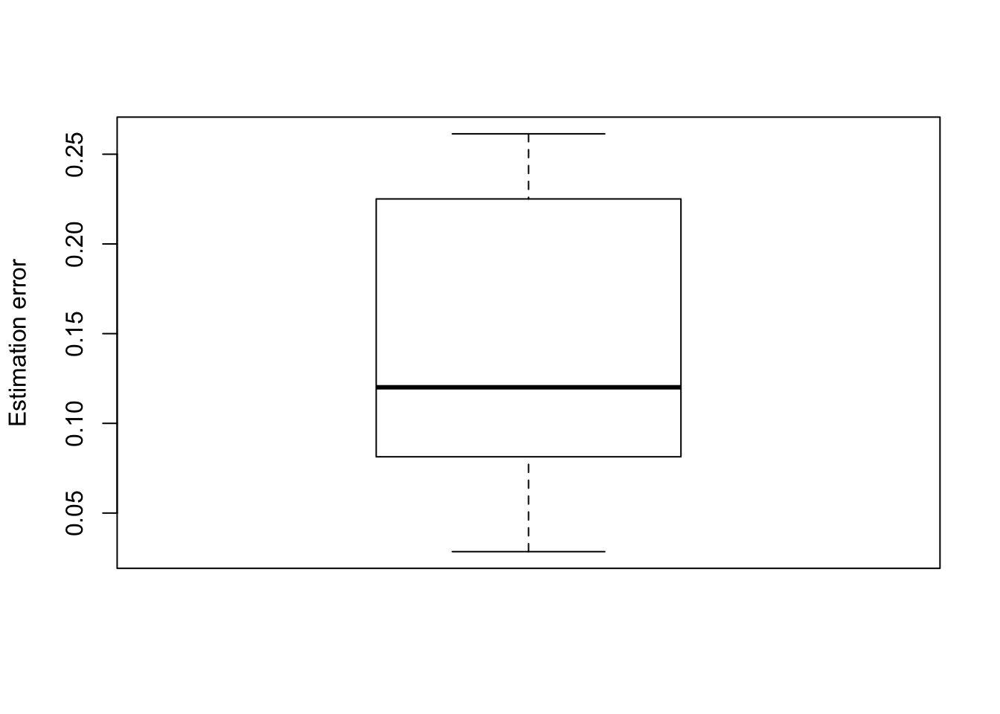
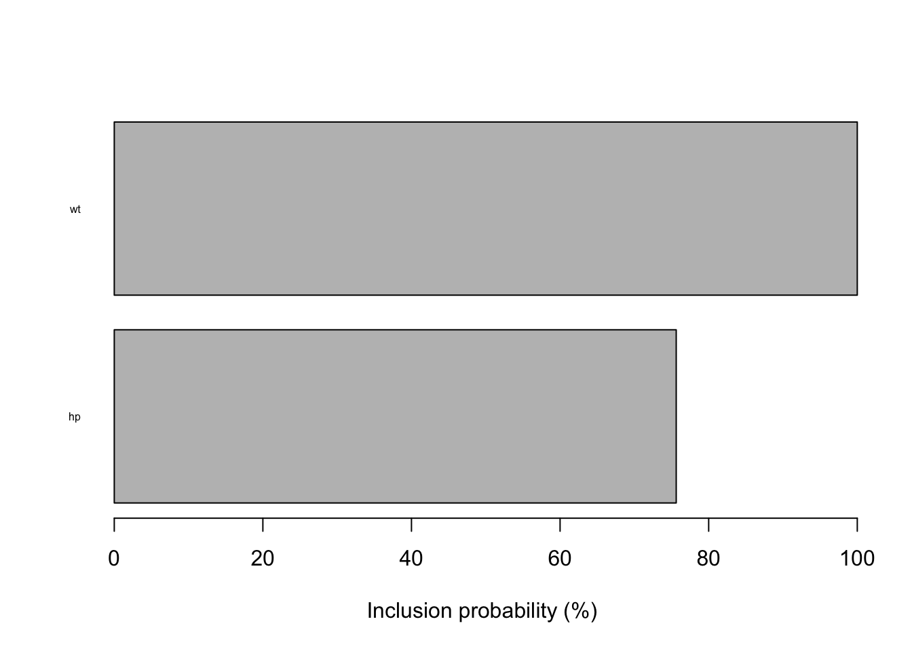

## Warning: package 'dplyr' was built under R version 3.4.2Either you try stable CRAN version
install.packages("cbar")Or unstable development version
devtools::install_github("zedoul/cbar")You’ll need to use library to load as follows:
library(cbar)cbar is an R package for detecting anomaly in time-series data with Bayesian inference. Although there are many packages to detect anomaly in the world, relatively few packages provide functions for visually and/or analytically abstracting the output.
The cbar package aims to provide simple-to-use functions for detecting anomaly, and abstracting the analysis output.
A minimal example would be like:
library(cbar)
.data <- mtcars
rownames(.data) <- NULL
datetime <- seq(from = Sys.time(), length.out = nrow(.data), by = "mins")
.data <- cbind(datetime = datetime, .data)
ref_session <- 1:16
mea_session <- 17:nrow(.data)
.cbar <- cbar(.data, ref_session, mea_session)
plot_ts(.cbar)
You may wonder why it uses reference and measurement instead of training and testing. In anomaly detection, espeically in telecommuncation field, performance reference period refers a period which serves a basis for defining anomaly, and performance measurement period refers the period during which performance parameters are measured.
If you hope to see the abstracted outcome, then:
summarise_session(.cbar)## session n_anomaly n_total rate
## 1 reference 0 16 0.000
## 2 measurement 2 16 0.125or you can just use print function as follows:
print(.cbar)## session n_anomaly n_total rate
## 1 reference 0 16 0.000
## 2 measurement 2 16 0.125or
summarise_session(.cbar)## session n_anomaly n_total rate
## 1 reference 0 16 0.000
## 2 measurement 2 16 0.125If you hope to see details of those anomalies:
summarise_anomaly(.cbar, .session = "measurement")## datetime session y point_pred lower_bound upper_bound
## 1 2017-10-23 11:53:19 measurement 14.7 10.78358 6.143483 15.58287
## 2 2017-10-23 11:54:19 measurement 32.4 24.75268 20.479201 28.81685
## 3 2017-10-23 11:55:19 measurement 30.4 26.53384 21.106759 32.01673
## 4 2017-10-23 11:56:19 measurement 33.9 25.70178 21.063648 30.37052
## 5 2017-10-23 11:57:19 measurement 21.5 23.12496 18.901012 28.09847
## 6 2017-10-23 11:58:19 measurement 15.5 17.62925 13.450514 21.91753
## 7 2017-10-23 11:59:19 measurement 15.2 17.97975 13.956142 21.73321
## 8 2017-10-23 12:00:19 measurement 13.3 14.24066 8.428793 19.33453
## 9 2017-10-23 12:01:19 measurement 19.2 15.98603 11.659268 20.12914
## 10 2017-10-23 12:02:19 measurement 27.3 25.34065 20.467165 30.08667
## 11 2017-10-23 12:03:19 measurement 26.0 23.97144 19.157906 28.94530
## 12 2017-10-23 12:04:19 measurement 30.4 24.81019 18.158970 30.63887
## 13 2017-10-23 12:05:19 measurement 15.8 15.36513 7.550942 22.83930
## 14 2017-10-23 12:06:19 measurement 19.7 19.38087 12.960239 24.81101
## 15 2017-10-23 12:07:19 measurement 15.0 12.25816 2.129695 20.73411
## 16 2017-10-23 12:08:19 measurement 21.4 22.00552 17.992760 26.61673
## anomaly
## 1 FALSE
## 2 TRUE
## 3 FALSE
## 4 TRUE
## 5 FALSE
## 6 FALSE
## 7 FALSE
## 8 FALSE
## 9 FALSE
## 10 FALSE
## 11 FALSE
## 12 FALSE
## 13 FALSE
## 14 FALSE
## 15 FALSE
## 16 FALSEAnd if you rather want to check prediction performance:
summarise_pred_error(.cbar)## datetime session diff mape
## 1 2017-10-23 11:53:19 measurement 3.9164185 0.26642302
## 2 2017-10-23 11:54:19 measurement 7.6473215 0.23602844
## 3 2017-10-23 11:55:19 measurement 3.8661593 0.12717629
## 4 2017-10-23 11:56:19 measurement 8.1982203 0.24183541
## 5 2017-10-23 11:57:19 measurement 1.6249569 0.07557939
## 6 2017-10-23 11:58:19 measurement 2.1292457 0.13737069
## 7 2017-10-23 11:59:19 measurement 2.7797510 0.18287835
## 8 2017-10-23 12:00:19 measurement 0.9406580 0.07072617
## 9 2017-10-23 12:01:19 measurement 3.2139670 0.16739411
## 10 2017-10-23 12:02:19 measurement 1.9593490 0.07177103
## 11 2017-10-23 12:03:19 measurement 2.0285607 0.07802157
## 12 2017-10-23 12:04:19 measurement 5.5898147 0.18387548
## 13 2017-10-23 12:05:19 measurement 0.4348719 0.02752354
## 14 2017-10-23 12:06:19 measurement 0.3191254 0.01619926
## 15 2017-10-23 12:07:19 measurement 2.7418431 0.18278954
## 16 2017-10-23 12:08:19 measurement 0.6055165 0.02829516to visualise:
plot_error(.cbar, method = "mape")
This Bayesian algorithm selects the best indicators, so we can make use of those selected indicators for structural analysis. Note that those indicators will be selected during the reference period.
To see those indicators:
summarise_incprob(.cbar)## hp wt
## 0.6641003 1.0000000to visualise:
plot_incprob(.cbar)